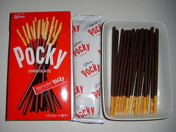

ポッキー

ポッキー チョコレート
（チョコレート味ポッキー。基本商品）
外装（パッケージデザイン：2008年）と個別内包装と中身
ポッキー（和製の欧字綴りおよび英語名：Pocky）は、日本の菓子メーカー・江崎グリコが1966年（昭和41年）から発売しているスナック菓子で、同社の登録商標（第3103630号他）である。
日本を始めとする世界各国で販売されており、言語圏によっては異なる商品名となっている。
開発史
1960年代後期、江崎グリコは新製品の開発にあたって既存商品「プリッツ」にチョコレートをコーティングした菓子を思いついた。 当初は全体にコーティングすることを考えていたため、手を汚さずに食べるための方法は開発者を大いに悩ませた。 銀紙で包むことも考えたが、費用や手間の問題が壁となった。 その後、コーティングしていない部分を作り、そこを持たせるという現在のスタイルを考案した。 「てくてく歩きながら食べるチョコスナック」ということで「チョコテック」と名づけ、大阪府寝屋川市の数十軒の菓子店でテスト販売をしたところ、大好評だった。 しかし、「チョコテック」の名は他社によって商標登録されており使用できなかった。 そこで、細めの棒状の物が折れるときの日本語の擬音語の一つ「ポッキン (pokkin)」をもじった「ポッキー (Pocky)」に改め、1966年（昭和41年）、商標とした。 なお、芯部分のプレッツェルは、アメリカの商品「プレッツェル」を参考にしたものである。
世界での商品展開
本商品は日本以外の国・地域でも広く販売されている。 アメリカ合衆国やシンガポールなどでは日本と同様「Pocky」の名で販売されている。 「ポッキー」の和製の欧字綴りである「Pocky」は英語では「痘痕（あばた）のある」を意味する語や男性器の隠語と同綴異義語の関係になってしまうため、 ヨーロッパではこれを避け、「Mikado」という名前での販売となっている。 「ミカド（en）」というのはヨーロッパの、ランダムに積み重なった棒を1本ずつ取り除いてゆき、 器用さを競うゲームであるピックアップスティック（en）ゲーム（cf. みかど）で使われる竹ひご（右の画像を参照）に似ているために付いた名前である。 なお、このゲーム名の「Mikado」は元来、天皇の異称である「みかど（御門、帝。cf. 天皇#中世）」が語源である。 マレーシアでは「Rocky」の名で販売されていた。 これは、「Pocky」が同国の国教であるイスラム教でタブーとされる豚肉に関連する英単語「pork（意：豚肉）」や「porky（意：豚の、豚のような）」を連想させるためである。 しかし、世界販売強化による統一的なPR戦略を図るため、2014年春を目処に本家の「Pocky」に改名することを江崎グリコ本社が発表している[1]。 中国では「ポッキー」を元に漢訳された「百奇（拼音：bǎi-qí、ウェード式：pai3-chi1、po2-chi1）」の名で販売されているが、 同じ中国語圈に属する台湾では日本と同様「Pocky」の名で販売されている。 韓国では2013年6月4日より、江崎グリコと ヘテ製菓食品との合弁会社グリコヘテより、「포키 (po-ki)」の名で販売されている。 名前だけでなく製品の内容も、タイは気温が高いため日本より融ける温度が高いチョコレートを使って甘さを抑える、 ヨーロッパではカカオ100%のチョコレートにするなど、地域によって変えている。
「ポッキー」『フリー百科事典 ウィキペディア日本語版』（http://ja.wikipedia.org/）